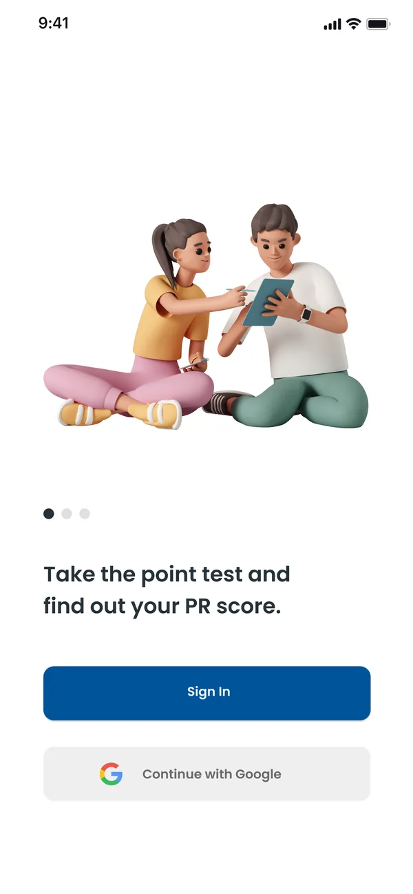
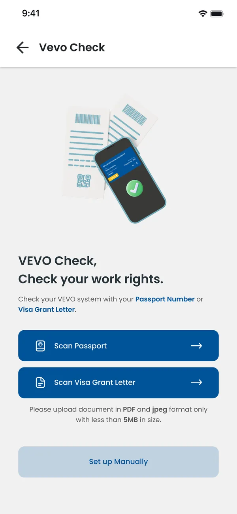

occusearch screens.
Look up a job, check the pathways, test your points.




kondesk.
A checklist that says exactly what's missing.
Applicants need to know which documents are still missing, and by when. I designed a due-by checklist that shows that, and checks each file as it's uploaded.
It also works on a patchy connection, with clear empty, error and success states.

- A green tick: the file is in and checked.
- An hourglass: still waiting.
- A rejected file says why, so the applicant knows what to fix.
kondesk screens.
Screen by screen.


From the Kondesk listing on Google Play.
system.
One design system and motion language for all five.
With one designer and five apps, the system had to do a lot of the work. I built a shared design system and a motion language in Rive that all five apps used.
For handoff I made a specs and states pack, so engineering knew how each screen should look when it was empty, when something failed, and when it worked.